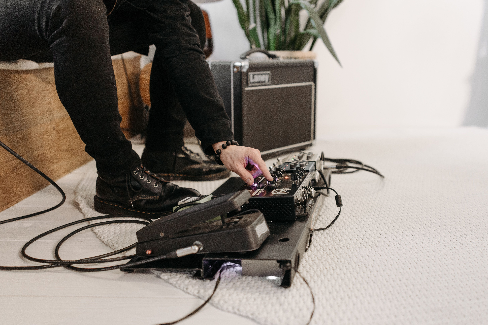

Entendendo seu Equipamento e Timbre

Ter uma boa guitarra é apenas metade do caminho. Entender a cadeia de sinal, os efeitos e a amplificação mudará completamente a sua percepção sonora.
Pedais Essenciais
- Overdrive/Distorção: O coração do rock. Adiciona ganho e sustentação às notas.
- Delay e Reverb: Efeitos de tempo e espaço que dão profundidade e preenchimento ao som.
A ordem dos fatores altera o produto: sempre coloque seus pedais de ganho antes dos pedais de modulação e ambiência!